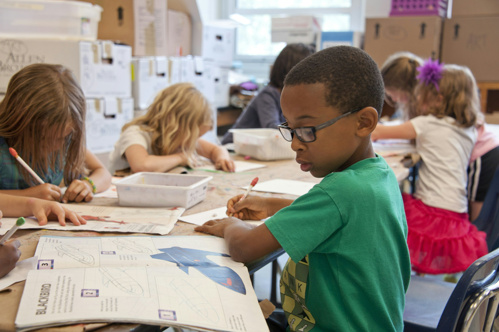
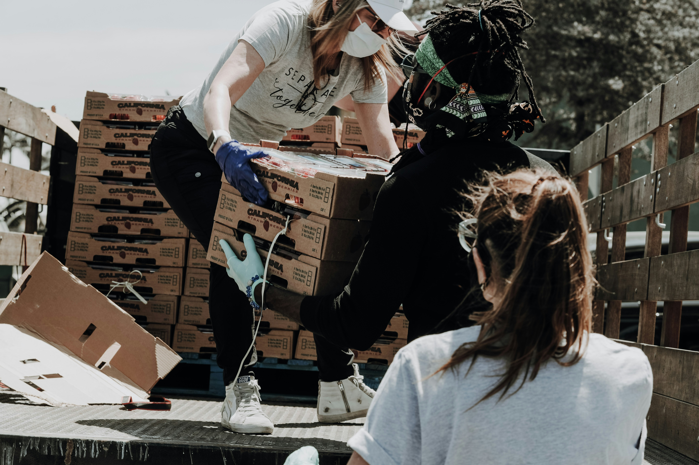
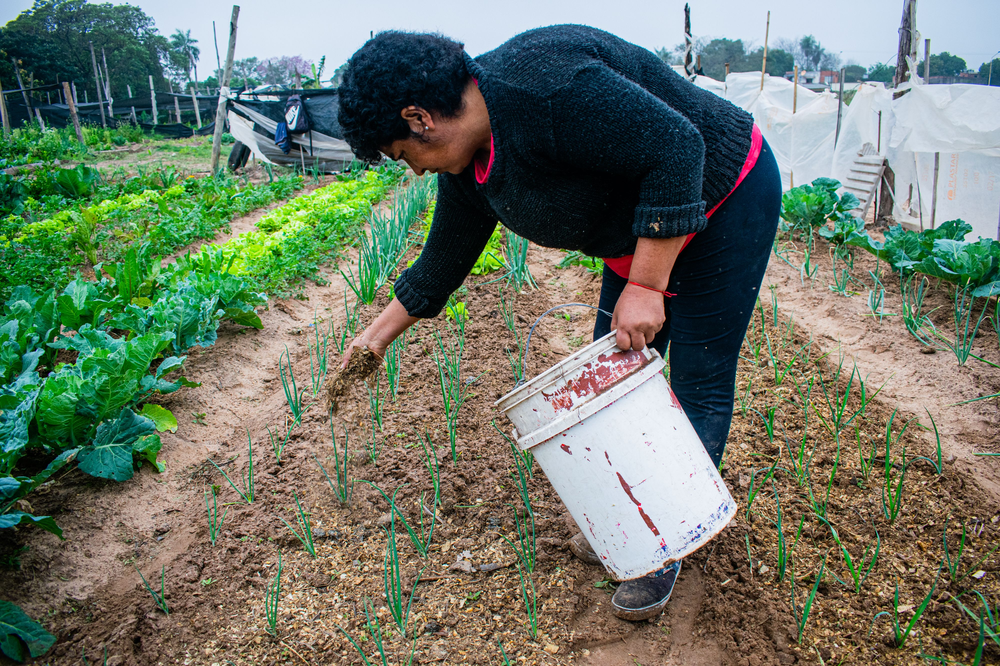

Projeto Educação para Todos

Oferecemos reforço escolar, oficinas de leitura e cursos de informática básica para crianças e jovens em situação de vulnerabilidade social.
Transformando Vidas, Construindo Futuros
Conheça os projetos ativos que transformam comunidades diariamente.

Oferecemos reforço escolar, oficinas de leitura e cursos de informática básica para crianças e jovens em situação de vulnerabilidade social.

Distribuição diária de refeições nutritivas e oficinas de capacitação profissional na área de culinária e panificação.

Hortas comunitárias e conscientização ambiental, promovendo a sustentabilidade e a integração de moradores urbanos.